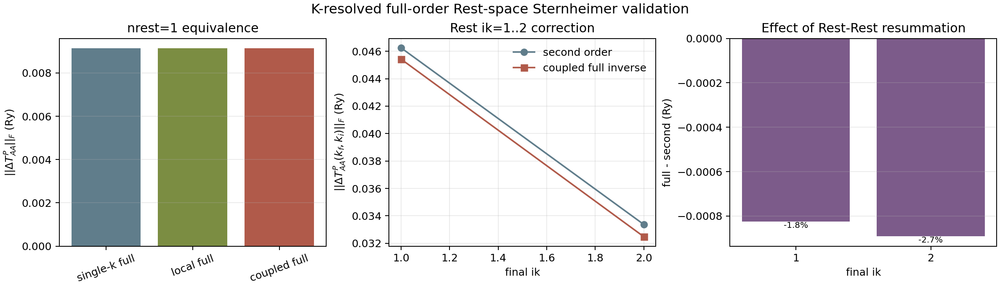
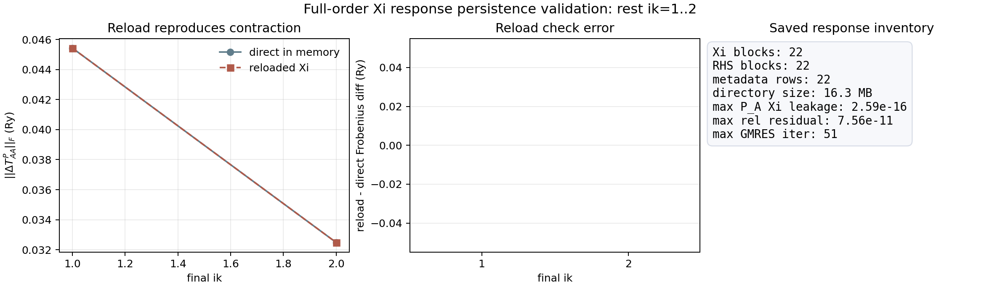
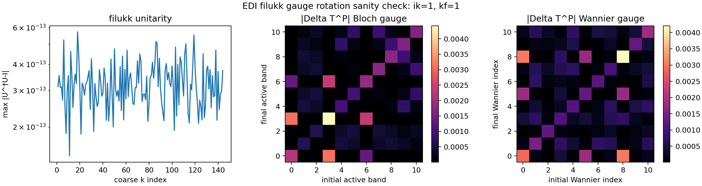
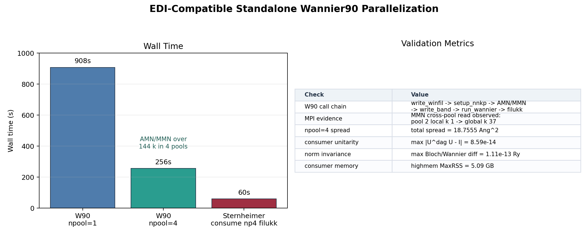
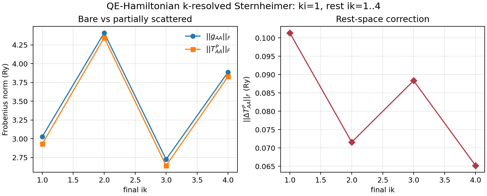
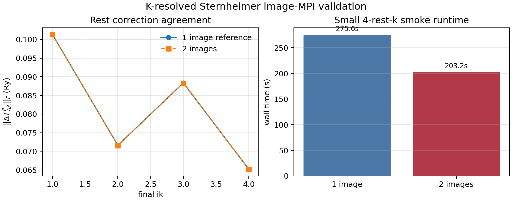
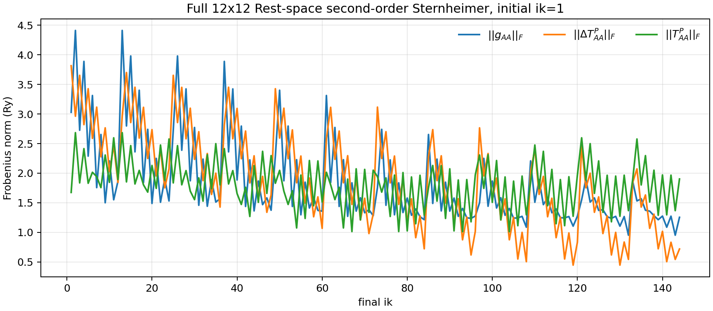
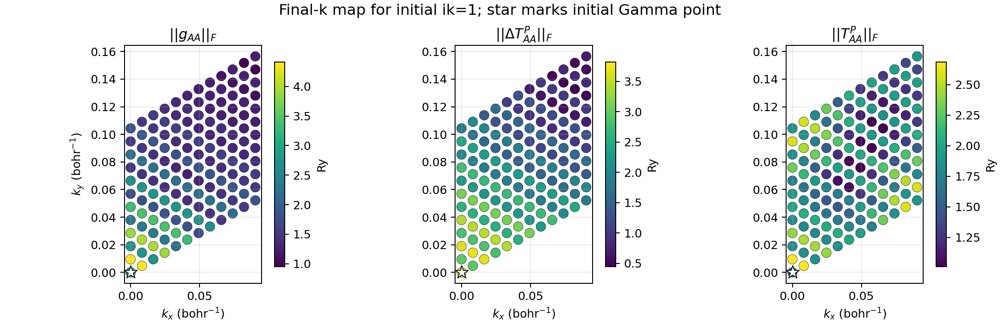

Purpose
This is the first k-resolved Sternheimer smoke after the single-k QE-Hamiltonian validation. For a fixed active initial state at ik=1, the code solves Rest-space Sternheimer equations at selected Rest k points and projects the response into selected final active k points.
The production 12x12 result on this page is still the second-order Rest-space scattering path. A new small-subspace full-order mode has now been added and validated for selected Rest k points.
Full-Order Rest Inverse Prototype
The k-resolved Sternheimer driver now supports mode_in = 'coupled_full_inverse'. In this mode the selected Rest-k blocks are solved as one block GMRES problem with the Rest-Rest coupling term included in the matrix action:
sum_k' Q_R(k) { [omega0 + i eta - H_QE(k)] delta_kk' - w_k' g(k,k') } Q_R(k') Xi_j(k';k_i)
= Q_R(k) g(k,k_i) |a_j,k_i>
The corresponding partially scattered active-space block is evaluated as:
Delta T^P_AA(k_f,k_i) = sum_k w_k <a_i,k_f| g(k_f,k) |Xi_j(k;k_i)> T^P_AA = g_AA + Delta T^P_AA

nrest=1, the k-resolved coupled inverse reproduces the old single-k full inverse to machine precision. For rest ik=1..2, Rest-Rest resummation changes the second-order correction by about 2 percent in this small subset.| Case | ||Delta T^P_AA||_F (Ry) | Diagnostic |
|---|---|---|
single-k full inverse, ik=1 | 9.139886721109e-3 | previous phase7 reference |
k-resolved local full inverse, nrest=1 | 9.139886721109e-3 | same-k full inverse inside k-resolved driver |
k-resolved coupled full inverse, nrest=1 | 9.139886721109e-3 | block GMRES degenerates to single-k full inverse |
local_full - coupled_full, nrest=1 | 3.11e-17 | Frobenius norm of matrix difference |
second order, rest ik=1..2 | 5.703513505852e-2 | independent Rest-k equations |
coupled full inverse, rest ik=1..2 | 5.584606498015e-2 | includes g_RR multiple scattering inside selected Rest subset |
second_order - coupled_full, rest ik=1..2 | 1.269788893891e-3 | Frobenius norm of matrix difference |
The rest ik=1..2 full-order run converged with maximum relative residual 7.56336231e-11 and maximum GMRES iteration count 51. Wall time was 36m38s on one highmem rank; this confirms the implementation but also shows that the current prototype scales roughly as N_rest^2 in the matrix action.
Inputs And Runtime
q=0 Validation
The ik=1, rest=1, final=1 limit reproduces the previously validated single-k QE-Hamiltonian Sternheimer calculation.
| Quantity | k-resolved q=0 smoke | single-k phase7 reference |
|---|---|---|
||g_AA||_F | 3.028765182765 Ry | 3.02876518 Ry |
||delta_T^P||_F | 9.22018407494e-3 Ry | 9.22018407e-3 Ry |
| max relative GMRES residual | 9.74176233e-11 | 9.74176116e-11 |
| max GMRES iterations | 36 | 36 |
Full-Order Xi Response Persistence
The driver can now save the full-order Rest-space response Xi_j(k_r;k_i) after GMRES and read it back to reproduce the active-space contraction. The saved object is the intended handoff to Wannier-function perturbation.
Xi_j(k_r;k_i) = [Q_R(omega0+i eta - H_QE)Q_R - Q_R g_RR Q_R]^-1 Q_R g(k_r,k_i)|a_j,k_i>

initial ik=1, rest ik=1..2, final ik=1..2. Reloaded Xi reproduces the direct in-memory Delta T^P_AA contraction exactly for this run.| Quantity | Value |
|---|---|
Saved Xi blocks | 22 |
| Saved RHS blocks | 22 |
| Metadata rows | 22 |
| Logical file size | 16.3 MB; filesystem usage about 23 MB |
max P_A Xi leakage | 2.58622560e-16 |
| max relative residual | 7.56336564e-11 |
| max GMRES iterations | 51 |
| reload diff, final ik=1 | 0.0 Ry |
| reload diff, final ik=2 | 0.0 Ry |
The binary response directory is intentionally not published to GitHub Pages. Only the reduced figure and summary diagnostics are included here.
EDI filukk Wannier Gauge
The Sternheimer driver now has a first filukk consumer path using EDI's combined rotation u_kc = u_mat_opt * u_mat. This avoids reconstructing the disentanglement and Wannier rotations separately, which is the safest way to keep the phase convention aligned with EDI.
|w_m(k)> = sum_n |psi_n(k)> U_nm(k) M^W(k_f,k_i) = U^\dagger(k_f) M^B(k_f,k_i) U(k_i)

filukk and an existing ik=1, rest=1, final=1 Sternheimer matrix CSV. The kept bands are exactly 7-17, max |U^\dagger U-I| = 5.73e-13, and the Bloch/Wannier Frobenius norm difference for Delta T^P_AA is 2.19e-16 Ry.| Check | Value |
|---|---|
filukk source | edi-dev/test_edinterp/edi_run2/edi_11bands/filukk |
| Header | nbndep=11, nbndskip=6 |
| Kept bands | 7, 8, 9, 10, 11, 12, 13, 14, 15, 16, 17 |
| Excluded-band lines inferred | 17; this older filukk has no spread block, so the reader detects the logical section instead of assuming current QE nbnd=150. |
max |U^\dagger U-I| | 5.728750807066e-13 |
||Delta T^P||_F Bloch/Wannier diff | 2.185751579731e-16 Ry |
The Fortran executable has been updated with use_wannier_gauge and filukk_file namelist flags and writes Wannier-gauge matrix, pair-summary, unitarity, and metadata CSV files. The QE-linked Slurm smoke completed in 46.4 s wall time with max |U^\dagger U-I| = 5.728751e-13 and maximum Bloch/Wannier Frobenius norm difference 2.104983e-13 Ry.
Standalone EDI-Style Wannier90 MPI
Wannierization is now split into a dedicated executable, qe_edi_wannierize.x. Its internal path is the same EDI sequence: write_winfil_edi, setup_nnkp, ylm_expansion, compute_amn_para, compute_mmn_para, write_band, and run_wannier/write_filukk. The Sternheimer executable no longer runs Wannier90; it consumes the generated filukk.

npool=1 in 15m08s and with npool=4 in 4m16s. The 4-pool MMN stage exercised cross-pool WFC reads, including pool 2 local k 1 -> global k 37. A highmem Sternheimer consumer smoke read the 4-pool filukk with max |U^dag U-I| = 8.59e-14 and Bloch/Wannier norm difference 1.11e-13 Ry.| Check | Result |
|---|---|
| Standalone W90 executable | qe_sternheimer/qe_edi_wannierize.x |
W90 output path, npool=1 | phase8_kresolved_sternheimer/standalone_wannier90/filukk |
W90 output path, npool=4 | phase8_kresolved_sternheimer/standalone_wannier90_np4/filukk |
npool=4 runtime | Slurm job 17627908, completed in 00:04:16; QE step wall time 4m04s. |
| Wannier spread | Total spread 18.7555 Ang^2, matching the single-pool smoke to printed precision. |
| Sternheimer consumer | Slurm job 17628026, highmem, completed in 00:01:00; MaxRSS 5.09 GB. |
| Consumer diagnostics | max |U^dag U-I| = 8.593126e-14; max Bloch/Wannier norm diff = 1.114664e-13 Ry. |
The local collected-WFC bridge keeps EDI's readwfc(ipool, recn, evc) interface, maps (ipool, local k) to the global k index, and reads QE 7 collected wfc<ik> files directly. This preserves the EDI pool-parallel AMN/MMN structure while remaining compatible with the current QE restart format.
4-k Smoke Results

initial ik=1 and rest ik=1..4.| initial ik | final ik | ||g_AA||_F (Ry) | ||delta_T^P||_F (Ry) | ||T^P_AA||_F (Ry) |
|---|---|---|---|---|
| 1 | 1 | 3.028765182765 | 1.013833998709e-1 | 2.931626493062 |
| 1 | 2 | 4.411549849075 | 7.158745432577e-2 | 4.346075545636 |
| 1 | 3 | 2.725489755487 | 8.835903870799e-2 | 2.642811623624 |
| 1 | 4 | 3.888508105418 | 6.519892372470e-2 | 3.830636837759 |
All 44 RHS solves converged. The maximum relative residual is 9.95966013e-11, and the maximum GMRES iteration count is 40.
Image-MPI Production Path
The k-resolved driver now supports QE image-level task parallelism. Each image keeps a complete 12x12 k-grid and its own QE h_psi communicator. Rest k points are distributed by MOD(irk-1,nimage) == my_image_id, and the partial delta_T^P blocks are reduced over inter_image_comm.

| Run | Images | Wall time | max |diff| in summary norms vs 1 image | max relative residual |
|---|---|---|---|---|
| reference 4-k smoke | 1 | 275.61 s | 0 | 9.95966013e-11 |
| image-MPI 4-k smoke | 2 | 203.25 s | 8.88e-16 Ry | 9.95967967e-11 |
This production route is intended for full rest ik=1..144 runs using -ni NIMAGE -nk 1. It deliberately avoids QE k-pool splitting because cross-k matrix elements require arbitrary initial, Rest, and final k wavefunctions in the same image.
Full 12x12 Production Result
The full selected-initial-k production run completed for initial ik=1, rest ik=1..144, and final ik=1..144 using 72 images on one highmem node.
9.97858095e-11.max ||delta T^P_AA||_F = 3.81532094 Ry at final ik=1.
g_AA, second-order Rest correction delta T^P_AA, and resulting T^P_AA over all 144 final k points.
ik=1.| Quantity | min | max | mean |
|---|---|---|---|
||g_AA(kf,ki)||_F | 0.95237705 Ry at final ik 143 | 4.41154985 Ry at final ik 2 | 1.83886164 Ry |
||delta T^P_AA(kf,ki)||_F | 0.44669808 Ry at final ik 119 | 3.81532094 Ry at final ik 1 | 1.90255231 Ry |
||T^P_AA(kf,ki)||_F | 1.01131893 Ry at final ik 93 | 2.68429785 Ry at final ik 13 | 1.80786869 Ry |
This is still the second-order Rest-space result g_AR G_R g_RA. It does not yet include Rest-Rest multiple scattering through [1 - g_RR G_R]^{-1} or active-space dynamic resummation.
Interpretation
The q=0 result verifies that the k-resolved driver reduces to the already validated single-k Sternheimer path. The 4-k smoke then exercises the new cross-k local folding and NC nonlocal projector-difference action.
The Rest-space correction is noticeably k-dependent, ranging from about 6.52e-2 to 1.01e-1 Ry over the selected final k points. This is still a small selected-k smoke, not a converged 12x12 Rest-space calculation.
Reproducibility
module reset module load aocc/3.1.0 openmpi/4.1.6 module load amdblis/3.0 amdlibflame/3.0 amdlibm/3.0 fftw make -C qe_sternheimer qe_kresolved_sternheimer_smoke.x make -C qe_sternheimer qe_edi_wannierize.x
sbatch qe_sternheimer/run_edi_wannierize_mos2_active_7_17_np4.sh sbatch qe_sternheimer/run_kresolved_standalone_np4_wannier_gauge_smoke.sh
qe_sternheimer/qe_kresolved_sternheimer_smoke.x \ -i qe_sternheimer/qe_kresolved_sternheimer_ik1_rest1_1_final1_1_real_delta_vacuum_nonlocal.in qe_sternheimer/qe_kresolved_sternheimer_smoke.x \ -i qe_sternheimer/qe_kresolved_sternheimer_ik1_rest1_4_final1_4_real_delta_vacuum_nonlocal.in
qe_sternheimer/qe_kresolved_sternheimer_smoke.x \ -i qe_sternheimer/qe_kresolved_sternheimer_ik1_rest1_1_final1_1_real_delta_vacuum_nonlocal_coupled_full_inverse.in qe_sternheimer/qe_kresolved_sternheimer_smoke.x \ -i qe_sternheimer/qe_kresolved_sternheimer_ik1_rest1_2_final1_2_real_delta_vacuum_nonlocal_coupled_full_inverse.in
qe_sternheimer/qe_kresolved_sternheimer_smoke.x \ -i qe_sternheimer/qe_kresolved_sternheimer_ik1_rest1_2_final1_2_real_delta_vacuum_nonlocal_coupled_full_inverse_save_response.in
qe_sternheimer/qe_kresolved_sternheimer_smoke.x \ -i qe_sternheimer/qe_kresolved_sternheimer_ik1_rest1_1_final1_1_real_delta_vacuum_nonlocal_wannier_gauge.in
mpirun -np 2 qe_sternheimer/qe_kresolved_sternheimer_smoke.x \ -ni 2 -nk 1 \ -i qe_sternheimer/qe_kresolved_sternheimer_ik1_rest1_4_final1_4_real_delta_vacuum_nonlocal_images.in sbatch qe_sternheimer/run_kresolved_sternheimer_ik1_full_144_images.sh
phase8_kresolved_sternheimer/ik1_rest1_144_final1_144_real_delta_vacuum_nonlocal_second_order_images_report.md phase8_kresolved_sternheimer/ik1_rest1_144_final1_144_real_delta_vacuum_nonlocal_second_order_images_pair_summary.csv phase8_kresolved_sternheimer/ik1_rest1_144_final1_144_real_delta_vacuum_nonlocal_second_order_images_rhs.csv phase8_kresolved_sternheimer/ik1_rest1_144_final1_144_real_delta_vacuum_nonlocal_second_order_images_matrix.csv
Published outputs are reduced CSV summaries, one plot, and the generated report. Raw wavefunctions, cube grids, binary tensors, and scheduler logs remain excluded.
Not Published
The full run directory contains raw QE wavefunctions, large cube data, generated executables, binary tensors, and run logs. Those files are intentionally not copied into docs/ and are excluded from the GitHub Pages commit.